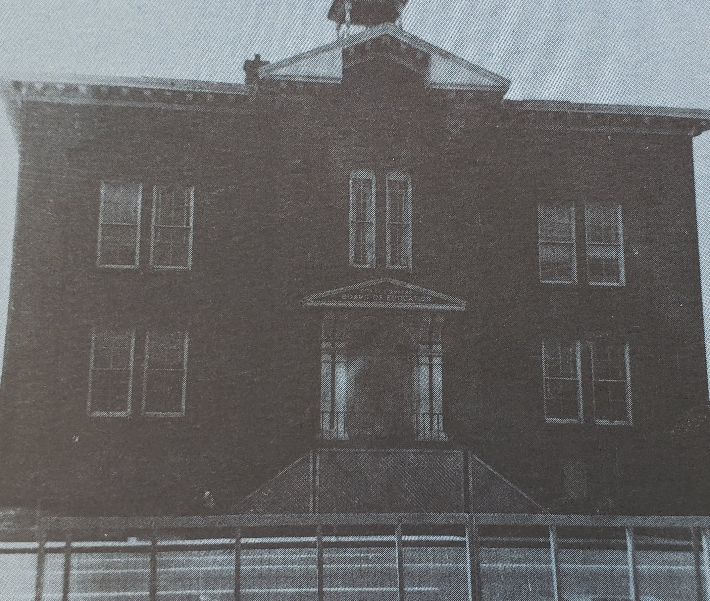
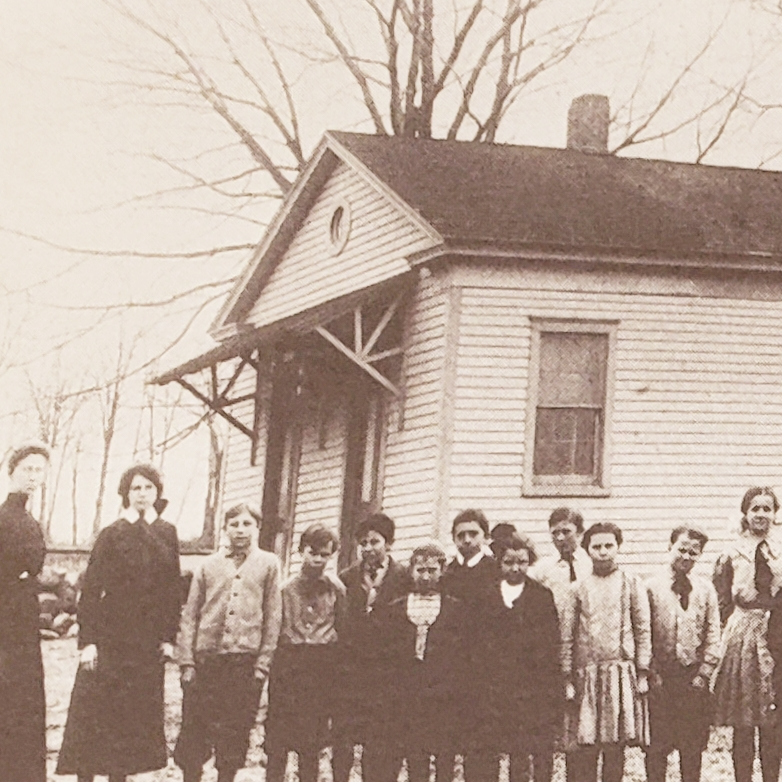
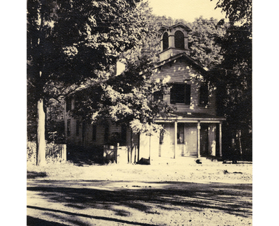

Schools

Stamford High School
Opened in 1873
The First Stamford High Building
This is the first Stamford High School opened on Broad Street in 1873 which later became the Board of Education Building. Stamford High School was one of the two comprehensive high schools in Stamford.
Mrs. Sarah B. Stevens is pictured with her students at the Bangall School. This school was last of the one-room schools to close in 1949.

Bangall School
Closed 1949
The Last One-room School

Old Green School
Opened in 1890s
Old Green on Elm Street
The old "Green" School as it looked in the nineties. It faced the Elm Street Park, standing opposite the northeast corner.